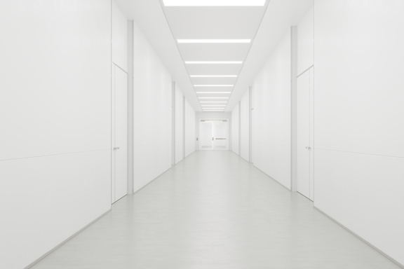
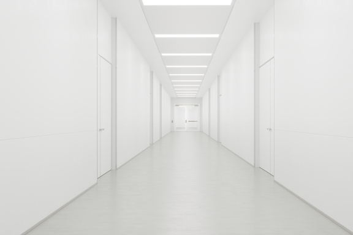

Learn How to Hang Wall Art the Right Way Every Time
Figuring out how to hang wall art correctly is one of the age-old conundrums of interior design. Everyone knows that an improperly hung work of art sticks out like a sore thumb, but it’s tricky to get right.
That is, until you know the unspoken rules you need to follow.We’re here to clear up this issue once and for all.

 
